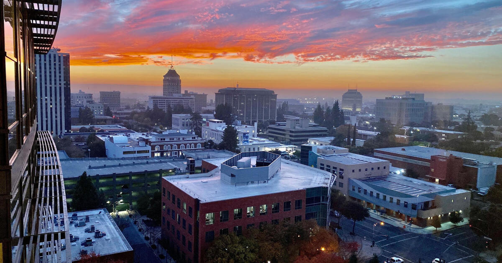
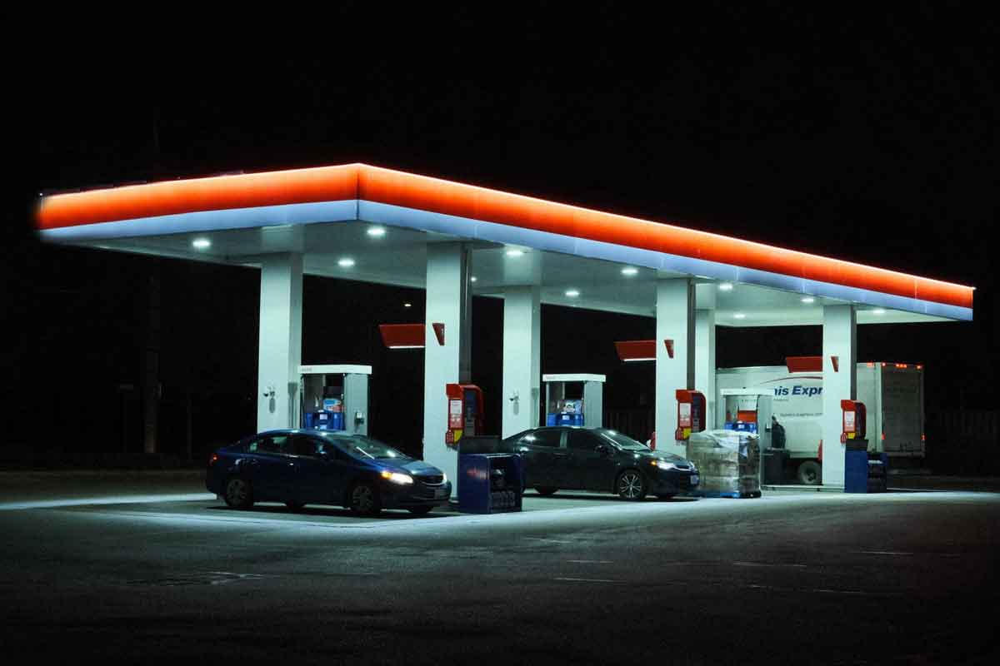
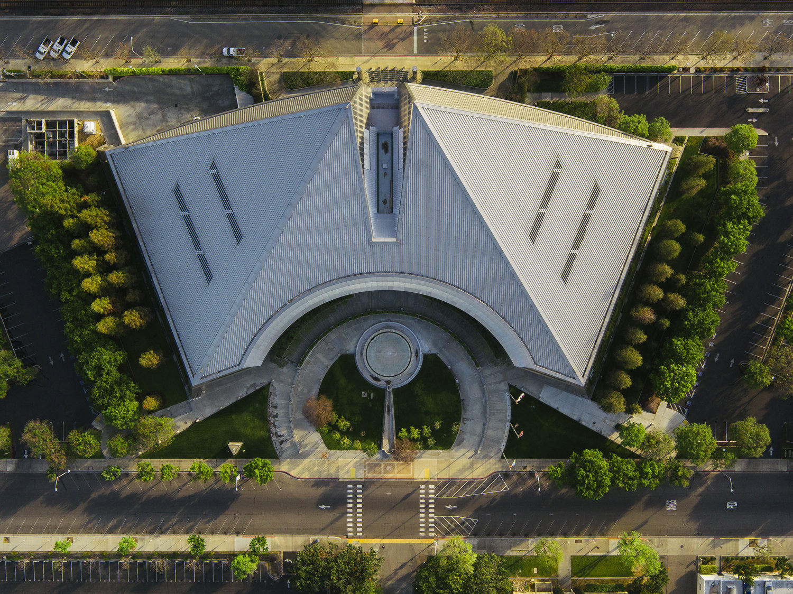

I am sitting at Jack's Gas. Belmont at Abby. Twenty-eight hours ago someone went the wrong way here with a sadistic kind of carelessness and critically injured a man who is not expected to live.
I see these characters all the time because I am here all the time. The pumps, the ice cream case, the men who do not have a next hour planned. The ranking dropped yesterday. Maxwell Social scored the fifty largest metros on museums, libraries, bookstores, universities, adult education, graduate degrees, and search interest in intellectual life. Fresno came in second from the bottom. Riverside first. Las Vegas third. Boston sat on top like a school that never closed.
The study did not measure IQ. It measured whether a city still acts like a mind after school lets out. We placed seventeenth in universities per capita. Then last in adult education, last in graduate degrees, last in people even searching for the stuff. Libraries forty-sixth. Bookstores forty-fifth. Museums thirty-ninth. The last three categories were the lid.
Rank
2nd least
of 50 large metros
Last place
3 categories
adult ed, grad degrees, search interest
Still hungry
68%
of adults surveyed crave more mind
The bottom is a door
Being at the bottom is almost a gift if you refuse to take it as an insult. There is almost a maximum opportunity to move upward with even a modicum of improvements. You do not need a new museum wing. You need one more sober hour, one more honest conversation, one more person who will look a ranking in the face and not hide behind it.
The same study said 68 percent of adults nationwide want more intellectually stimulating rooms. Forty-five percent stay away because of social anxiety. Forty-one percent say they have no time. Fresno already knows the time problem. GoDaddy ranked us sixth most entrepreneurial in the country this year. We hustle. We do not sit. The mind gets postponed until the next shift, the next crisis, the next wrong-way driver.

The first chain
I recently began preaching. Open air. Microphone and amplifier. About 11 in the morning. The first week on my own equipment was September 12. This is still a story, not a sermon. The story is what Mr. Hightower is doing under the leadership of his higher power, Jehovah.
Lifting the chains of addiction looks like the first step. A city that cannot keep a man in his own lane for one block is not ready for a lecture series. The criminal element stays on this street because the dais has trained the street to expect no consequence. You can count bookstores later. First you count who is still alive at dawn.
Addiction is not an intellectual hobby. It is a tax on attention. It empties the search bar. It empties the library card. It fills the wrong-way lane. You cannot build adult education on a block that is still bargaining with the next hit. The ranking measured search interest in intellectual activities. The corner measures search interest in anything that is not pain.

The camera and the corner
Nick Shirley had a big effect. A young man with a camera walked into empty buildings that were drawing public money and asked a child's question. Where are the children? California answered with a statute critics called the Stop Nick Shirley Act. He answered that he does not drink, does not use, has no vice they can hang a smear on, and believes in God. That last clause is the one they cannot audit.
The parallel is not that Belmont is Minnesota. The parallel is the method. Look at the facility. Look at the ledger. Look at the body on the asphalt. Do not let the brochure outrun the block. Shirley used a lens. Hightower uses a microphone and a chair at a gas station he already occupies. Both are acts of attention in cities that have trained themselves not to look.
Corruption on the council does not show up in Maxwell's seven categories. It shows up in the men who know they can work this corner because no one above them will spend political capital to move them. Intellectual life is not only lectures. It is the courage to name what everyone already sees.
What the work looks like
Mr. Hightower is not waiting for a museum grant. He is at the pumps. He is at the park. He is asking Jehovah for the next sentence that will hold a man long enough to put the pipe down. Jesus Christ is not a branding exercise here. He is the only authority the street still recognizes when every other authority has been bought or bored.
The improvements that move a ranking are small and local. One sober week. One neighbor who stops pretending the wrong-way crash was weather. One council vote that treats District 3 as a mind instead of a warehouse. One story published so the preview card in a phone tells the truth before the article loads.
Second from the bottom means the climb is almost all uphill. That is not poetry. That is geometry. A city that already hustles can learn to think if it first learns to stay alive past midnight. The Holy Spirit does not wait for Boston's score. The Spirit waits at Jack's, where the coffee is average and the view is exact.
Closing
This story is a record, not a homily. A ranking landed. A man was broken on Belmont. A microphone came out. Under Jehovah, the first work is the chain you can see. The rest of the intellect will have somewhere to sit if the body is still here in the morning.
Sources
- KSEE24 / YourCentralValley, "Fresno ranks as country's second least intellectual city," Sept. 14, 2026.
- Maxwell Social, "America's Most Intellectual Cities," 2026. Riverside, Fresno, Las Vegas at the bottom of 50 large metros.
- GV Wire, Sept. 14, 2026, study methodology and national survey of 905 adults.
- Jack's Gas, 1736 E Belmont Ave, Fresno, CA 93701. Corner of Belmont and Abby.
- Witness account of a wrong-way injury crash at that corner, approximately Sept. 14, 2026. Condition of the injured man as stated by the observer.
- Nick Shirley public statements on sobriety, faith, and California's AB 2624 response to his reporting.